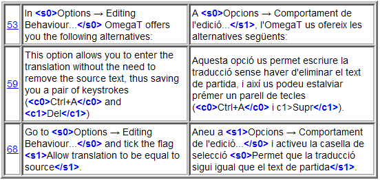

|
Finestra principal de l'OmegaT |
Conté el menú principal, la barra d'estat i tres subfinestres: |
|
--- Subfinestra de l'editor |
On escriviu i editeu la traducció |
|
--- Subfinestra del visualitzador de coincidències |
Mostra els segments més similars trobats a les memòries de traducció |
|
--- Subfinestra del visualitzador de glossaris |
Mostra la traducció de la terminologia |
|
Finestra dels fitxers del projecte |
|
|
|
|
|
|
|
Els següents diàlegs s'utilitzen per canviar la configuració del projecte i de l'OmegaT. Tots estan descrits en altres apartats; a continuació només es resumeix la seva utilització i com es poden obrir:
|
|
|
|
|
|
|
|
|
|
La finestra principal té diverses subfinestres, un menú principal i una barra d'estat. Podeu canviar la posició de qualsevol subfinestra o desacoblar-la en una finestra separada arrossegant la subfinestra per la barra de títol. En funció de l'estat de la subfinestra, poden mostrar-se icones diferents a l'extrem superior dret:
 redueix la subfinestra de manera que només se'n vegi el nom i la col·loca a la part inferior, prop de la barra d'estat.
redueix la subfinestra de manera que només se'n vegi el nom i la col·loca a la part inferior, prop de la barra d'estat.
 fa que la subfinestra ocupi tot l'espai disponible de la finestra.
fa que la subfinestra ocupi tot l'espai disponible de la finestra.
 restableix la subfinestra a la posició on era abans de maximitzar-la o minimitzar-la.
restableix la subfinestra a la posició on era abans de maximitzar-la o minimitzar-la.
 desacobla la subfinestra de la finestra principal de manera que passa a ser una finestra independent.
desacobla la subfinestra de la finestra principal de manera que passa a ser una finestra independent.
 torna a col·locar la subfinestra dins de la finestra principal.
torna a col·locar la subfinestra dins de la finestra principal.
Les subfinestres també es poden col·locar de manera que es superposin. En aquest cas, es mostrarà una pestanya per cada subfinestra a la part superior. En fer clic a la pestanya, la subfinestra passarà a primer pla. Els separadors de les subfinestres es poden arrossegar per tal de canviar-ne la mida.
Els comptadors de la part inferior dreta fan el seguiment del progrés de la traducció:

| 31/34 | nombre de segments (traduïts / total) del fitxer actual |
| 2530/2605 | nombre de segments únics (traduïts / total) del projecte |
| 3196 | nombre total de segments (incloses les repeticions) del projecte |
| 39/53 | nombre de paraules del segment de partida i d'arribada |
Aquí hi escriureu i editareu la traducció. La subfinestra de l'editor mostra el text del document traduït parcialment: el text que ja heu traduït apareix traduït, i el text que encara no heu traduït es mostra en la llengua original. El text està dividit en segments, i podeu desplaçar-vos pel document i fer doble clic en qualsevol segment per editar-lo. Al cas anterior, els segments ja traduïts no estan marcats explícitament, però podeu canviar-ne la configuració per tal d'ajustar-la a les vostres preferències. Per exemple, podeu fer que es marquin de color groc (vegeu el menú Visualització).
Un dels segments és el segment actiu. Es tracta de l'únic segment que es mostra en dues parts: a la part superior hi ha el text en la llengua original, en negreta i amb el fons de color verd, i a la part inferior hi ha el camp d'edició, delimitat per dos marcadors: el marcador esquerre <segment nnnn>, on nnnn és el número del segment dins del projecte, i el marcador dret <fi del segment>. El text de la part superior s'utilitza com a referència, i el camp d'edició s'utilitza per sobreescriure o modificar la traducció.
En funció del comportament de l'edició el camp d'edició pot mostrar-se buit, pot contenir el text de partida o pot contenir la traducció del segment més similar al que esteu traduint. En passar a un altre segment, la traducció es valida i s'emmagatzema. Si voleu deixar el segment sense traduir, deixeu el camp d'edició buit, és a dir, elimineu-ne tot el text (podeu seleccionar-lo tot amb Ctrl+A i suprimir-lo amb Supr). L'OmegaT pot recordar una traducció tot i que sigui idèntica al text de partida. Això pot ser útil en documents que continguin marques registrades, noms propis o fragments en una tercera llengua que no s'han de traduir.
Vegeu l'apartat Edició de la traducció per obtenir més detalls.
En passar al segment següent, la primera coincidència parcial (la que tingui el millor percentatge de coincidència) se seleccionarà automàticament. La coincidència parcial seleccionada es ressaltarà en negreta, les paraules que falten al segment que esteu traduint es ressaltaran de color blau i les paraules adjacents a les parts que falten es ressaltaran de color verd. Podeu seleccionar una altra coincidència prement Ctrl+2, 3, 4 o 5. Òbviament, si no hi ha cap coincidència número 5, prémer Ctrl+5 no farà res. Si voleu utilitzar la coincidència seleccionada a la traducció, premeu Ctrl+R per reemplaçar el camp d'edició per la coincidència, o premeu Ctrl+I per inserir-la a la posició del cursor.
A grans trets, el percentatge de coincidència (és a dir, la mesura de la diferència entre el segment de partida i les coincidències) es calcula a partir del nombre de paraules comunes del segment actiu i del segment coincident dividit entre el nombre total de paraules del segment més llarg dels dos. Si s'utilitza el connector d'analitzador lèxic (o «tokenizer» en anglès), primer les paraules d'ambdós segments es redueixen a llurs arrels. Si no s'utilitza, les paraules no es modifiquen i només s'ometen els signes de puntuació, les xifres i les etiquetes. Finalment, les diferències d'etiquetes, de xifres i de puntuació (que s'ometen als dos casos anteriors) es poden incloure al càlcul. El visualitzador de coincidències mostra les tres mesures d'aquesta manera:
<% de coincidència, quan s'utilitza l'analitzador lèxic / % de coincidència per defecte de l'OmegaT / % de coincidència amb etiquetes, xifres i puntuació incloses>A l'exemple anterior, les dues primeres mesures (60/60) són iguals, ja que no s'ha utilitzat cap analitzador lèxic. El tercer percentatge (72) inclou les diferències de puntuació, d'etiquetes i de xifres.
Si no es mostra cap nom de fitxer, vol dir que la coincidència s'ha trobat a la memòria de traducció per defecte del projecte. Els segments orfes (la coincidència número 4) són els segments de la memòria de traducció per defecte del projecte que no corresponen a cap segment dels fitxers de partida. Al cas anterior, s'ha editat la frase original, que ja s'havia traduït amb l'OmegaT.
La subfinestra Glossari us permet accedir al recull d'expressions i de terminologia especialitzada que hàgiu inclòs als fitxers de glossari. Mostra la traducció dels termes que apareixen en el segment actual, però només els mostra com a referència, ja que no permet inserir ni reemplaçar-ne la traducció.

El segment de partida de l'exemple anterior és «In most translation jobs it is considered important to have the translated document look similar to the original.» i dues paraules del segment («document» i «translation») apareixen al fitxer de glossari. L'OmegaT també admet termes formats per diverses paraules, però d'una manera força bàsica: si les dues paraules d'un terme apareixen en el segment, el terme es mostrarà.
Els diccionaris són la versió electrònica dels diccionaris impresos MerriamWebsters, Duden, Larousse etc. que potser teniu a l'escriptori.
Si heu activat l'opció Google Traductor al menú Opcions, la subfinestra Google Traductor mostrarà la traducció del segment actual feta amb el Google Traductor, que podeu inserir a la part de traducció del segment.
Òbviament, podeu utilitzar el menú principal per accedir a totes les funcions de l'OmegaT. Vegeu l'apèndix Menú principal per obtenir una descripció de tots els menús i els seus elements. També podeu accedir a les funcions més utilitzades mitjançant dreceres de teclat i, quan us hàgiu acostumat a utilitzar-les, no us caldrà navegar pels menús durant la traducció.
La barra d'estat mostra missatges relacionats amb el flux de treball a la part inferior de la finestra principal. Aquesta barra presenta a l'usuari missatges sobre les operacions en curs. També mostra el nombre de coincidències parcials i de termes del segment actual.
La finestra Fitxers del projecte llista els fitxers del projecte i mostra altra informació del projecte. S'obre automàticament en carregar un projecte a l'OmegaT. Per tancar-la premeu Esc i per obrir-la o posar-la en primer pla premeu Ctrl+L.
Es mostra la informació següent:
Llista de tots els fitxers traduïbles del projecte. Inclou els fitxers de la carpeta dels fitxers de partida que són compatibles amb l'OmegaT. En fer clic en un fitxer, s'obrirà per tal que pugueu realitzar-ne la traducció.
El fitxer mostrat actualment a la subfinestra de l'editor es ressalta amb fons blau.
Al costat del nom de fitxer, es mostra el nombre de segments de cada fitxer.
El nombre de segments únics de tot el projecte.
El nombre de segments únics ja traduïts. S'actualitza cada vegada que traduïu un segment.
El conjunt de segments únics es calcula agafant tots els segments i eliminant-ne tots els duplicats que, per tal de considerar-se com a duplicats, han de coincidir exactament a nivell de majúscules i minúscules («Executa» i «executa» es consideren diferents).
Si mireu la diferència entre el «Nombre de segments» i el «Nombre de segments únics», podreu fer-vos una idea general de les repeticions que conté el text. No obstant això, tingueu en compte que els nombres no indiquen la rellevància de les repeticions: és possible que es tracti de frases relativament llargues que es repeteixen diverses vegades (si teniu sort), o bé de paraules clau d'una taula (si no teniu tanta sort). El fitxer project_stats.txt, que es troba a la carpeta /omegat del projecte, conté informació de segments més detallada per fitxer.
És possible modificar el nombre de segments/segments únics modificant les regles de segmentació. No obstant això, cal que eviteu aquests tipus de modificacions una vegada que ja hàgiu començat a traduir el projecte. Vegeu l'apartat Regles de segmentació per obtenir més informació.
Podeu afegir fitxers de partida al projecte fent clic al botó «Importa fitxers de partida...» D'aquesta manera, els fitxers es copien a la carpeta dels fitxers de partida (per defecte, «/source») i es torna a carregar el projecte per tal de carregar els fitxers nous. També podeu afegir fitxer de partida a partir de pàgines d'Internet, escrites a MediaWiki, fent clic al botó «Importa des de MediaWiki...» i especificant-ne l'URL corresponent.
La finestra de cerca us permet cercar segments específics del projecte. Podeu tenir diverses finestres de cerca obertes simultàniament. Per obrir-ne una de nova, premeu Ctrl+F des de la finestra principal. La finestra de cerca conté un camp de text per cercar cadenes o paraules clau, caselles de selecció i botons d'opció per configurar la cerca, i una àrea de visualització dels resultats de la cerca.
Les cerques es realitzen tant al text de partida com a la traducció. També podeu cercar dins d'una carpeta, però tingueu en compte que l'OmegaT només pot cercar dins dels fitxers compatibles.
Les cerques permeten l'ús dels comodins * i ?, així com d'expressions regulars.
En fer clic al botó Cerca un cop especificada una cadena al camp de cerca, es mostraran tots els segments del projecte que continguin la cadena que esteu cercant.
Com que l'OmegaT tracta tots els segments idèntics com una única entitat, només es mostra el primer segment únic. Activeu «Mostra tots els resultats» per veure totes les instàncies de segments idèntics. Els segments es mostren en l'ordre en què apareixen al projecte. Si els segments estan traduïts, es mostra el text de partida a sobre i el text traduït a sota; en canvi, si els segments no s'han traduït, només es mostra el text de partida.
Podeu fer doble clic en un segment per activar-lo a la finestra de l'editor. A continuació, podeu tornar a la finestra de cerca i per anar al següent segment i modificar-lo. Aquest mètode és útil per realitzar canvis globals de terminologia.
La finestra de validació de les etiquetes detecta els errors d'etiquetes de la traducció i els mostra en una llista. Per obrir la finestra, premeu Ctrl+T. La finestra conté una taula amb tres columnes amb un enllaç al segment i amb el contingut del text de partida i del text traduït:

Les etiquetes estan ressaltades de color blau per facilitar la comparació entre el contingut original i el traduït. Feu clic a l'enllaç per anar al segment a la finestra de l'editor. Corregiu l'error, si és necessari, i premeu Ctrl+T per tornar a la finestra de validació de les etiquetes i corregir altres errors. Al primer i tercer cas de l'exemple anterior, les etiquetes estan emparellades incorrectament, i al segon cas, l'etiqueta d'inici no conté el caràcter <.
Els errors d'etiquetes corresponen a manipulacions d'etiquetes fetes a la traducció que han provocat un canvi de l'ordre o del nombre d'etiquetes del segment original. Algunes manipulacions d'etiquetes són necessàries i correctes, tot i que algunes altres provocaran problemes en crear el document traduït. Generalment, les etiquetes representen algun tipus de format al text original. La simplificació del format del text original contribueix en gran mesura a la reducció del nombre d'etiquetes.
El navegador de l'ajuda (on es mostra aquest manual) es pot obrir prement F1 o seleccionant Ajuda → Manual d'usuari... al menú principal.
A la finestra, es mostrarà el manual i dos botons: Enrere i Contingut. El manual d'usuari és un document HTML que enllaça amb els diferents capítols. En fer clic a un enllaç, tal com en qualsevol navegador web, s'obre la pàgina corresponent.
El manual d'usuari es troba a la subcarpeta docs dins de la carpeta d'instal·lació de l'OmegaT i, per exemple, podeu veure la documentació en català obrint el fitxer docs/ca/index.html al navegador. D'aquesta manera, també podreu obrir els enllaços externs, ja que el navegador de l'ajuda integrat no permet els enllaços externs d'Internet.
| Avisos legals | Inici | Índex |